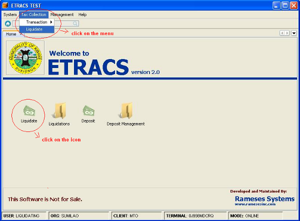
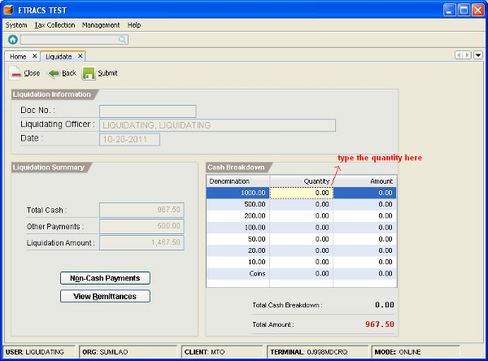
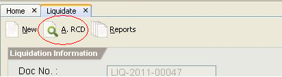
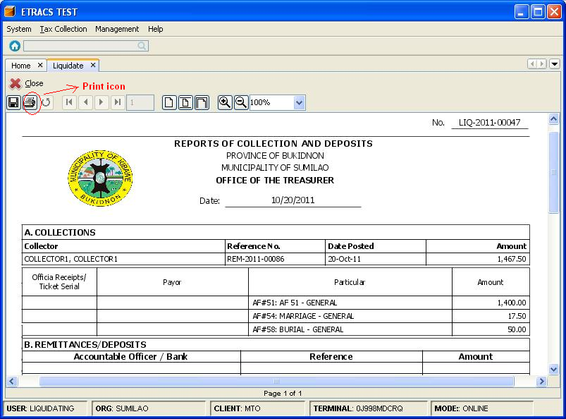
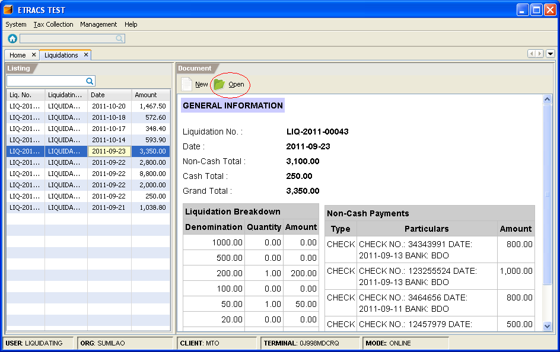

Liquidate Remittances
This facility enables you to liquidate remittances and print supporting documents
such as Reports of Collection and Deposits (RCD) and other reports that are supported by the system.
How to liquidate remittances?
1. On the menu toolbar, go to "Tax Collection -> Liquidate" item. You can also click on the "Liquidate" icon from the home page.

2. Click on the “Next” button or press [Ctrl+N] to proceed.
3. To view the collector remittances, click on the "View Remittances" button. To view the remitted checks, click on the "Non-Cash Payments" button.
Then, do the cash breakdown. Total Cash Breakdown must be equal to the Total Amount of cash.

4. Click on the “Submit” button or press [Ctrl+S] to submit the document.
5. Click on the “A. RCD” button to view the RCD.

6. Click on the "Print" icon to print the RCD.

How to view liquidations?
1. Click on the "Liquidations" icon from the home page.
2. Select a liquidation record from the list. The information will display on the right side of the screen.
Click on the "Open" button to open the selected liquidation record.
